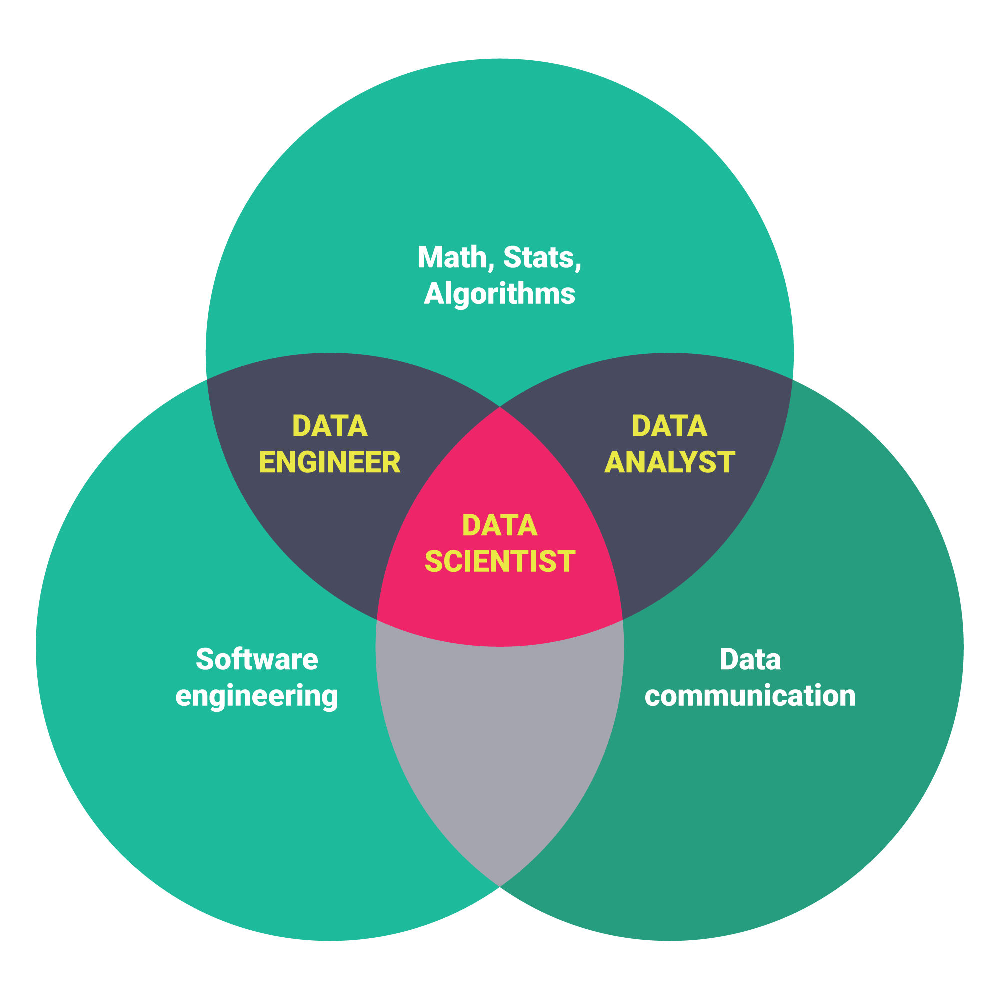

Making strategic decisions with data
Data Science
Data science, also known as data-driven science, is an interdisciplinary field about scientific methods, processes, and systems to extract knowledge or insights from data in various forms.
Data scientists use their data and analytical ability to find and interpret rich data sources; manage large amounts of data despite hardware, software, and bandwidth constraints; merge data sources; ensure consistency of datasets; create visualizations to aid in understanding data; build mathematical models using the data; and present and communicate the data insights/findings. They are often expected to produce answers in days rather than months, work by exploratory analysis and rapid iteration, and to produce and present results with dashboards (displays of current values) rather than papers/reports, as statisticians normally do.
Data Scientist
Data Analyst
Data Engineer
Teamwork and Leadership
Algorithms and Engineering
Communication and Problem Solving
Programming and Statistics

Sample Job Titles
Relevant Skills